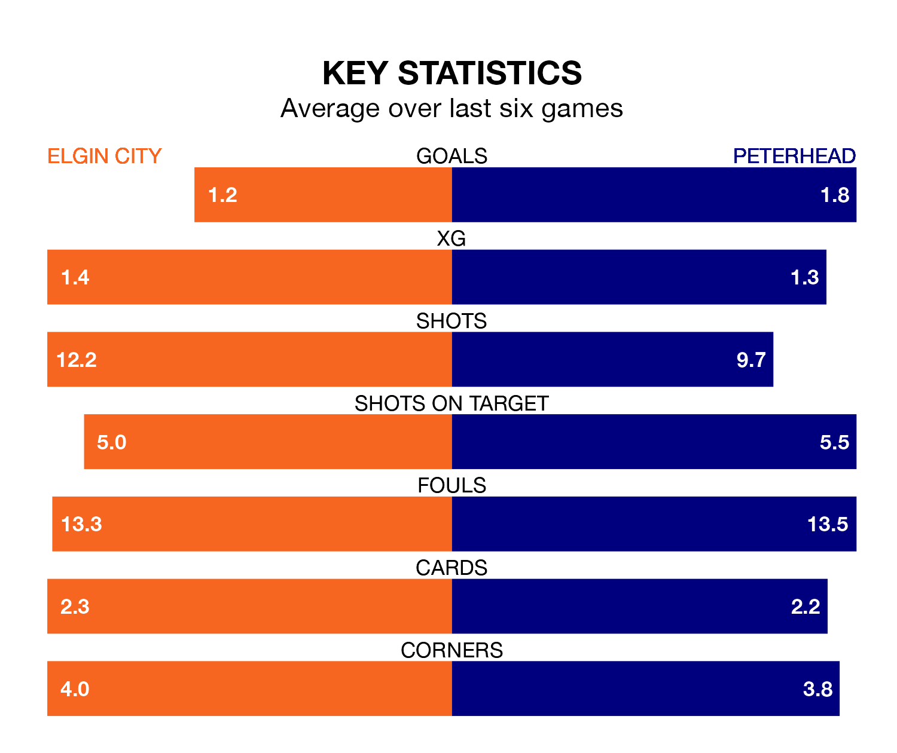

Peterhead face Elgin City on Saturday seeking to protect their long unbeaten run in League Two.
The Blue Toon are unbeaten in six, with three wins and three draws, ahead of the 3pm kick-off.
They face an Elgin team who have won two and drawn three over the same number of games.
With 32 goals in 33 games so far this season, Elgin are the league's lowest scorers with 1.0 goals per game. And they are conceding more than average, letting in 53 goals at a rate of 1.6 per game.
Peterhead, meanwhile, are above average scorers, with 1.6 goals per game, compared to a league average of 1.3. They have conceded 1.1 goals per game.
The Blue Toon are second in the table after 33 games, of which they have won 15 and drawn 10, earning 55 points.
City are four places behind the away team in sixth, with 10 wins and eight draws putting them on 38 points.
In the last 10 years, Elgin and Peterhead have played each other on 13 occasions. Elgin won two of them, Peterhead 10, and they drew once.
On average, the Black & Whites scored 0.6 goals and the Blue Toon 2.5 in those matches.
Their last meeting was on February 24, when they played out a 1-1 draw.
With Stuart McKenzie between the sticks, Peterhead can rely on one of the league's safest pair of hands. He has kept seven clean sheets in his 32 appearances this season in League Two.
In the Black & Whites' net, Tom McHale has six clean sheets in 32 games. He has conceded a goal every 63 minutes, 30% more often than the 82 minutes between goals for Stuart McKenzie.
Elgin's last match was on April 13, a 1-1 draw against Stenhousemuir, with Robert Jones getting the goal for the Black & Whites.
Peterhead beat Forfar Athletic 2-1 last time out, also on April 13, with Hamish Ritchie and Jack Brown on the scoresheet.
Updated: 11:31 (UTC), 15/04/24